Zihang (Henry) Yang
Master of City Planning (Smart cities)
University of Pennsylvania School of Design
Email: henryyzh@design.upenn.edu

Understanding Urban Environments x Wildlife Activity
Master of City Planning (Smart cities)
University of Pennsylvania School of Design
Email: henryyzh@design.upenn.edu
Master of City Planning (Smart cities)
University of Pennsylvania School of Design
Email: jinhengc@design.upenn.edu
Web: Jinheng Portfolio
Assistant Professor of Urban Spatial Analytics and Geospatial Data Science
University of Pennsylvania School of Design
Email: jianglix@design.upenn.edu

Wildlife Ecologist
Associate Director, One Health in Action
University of Pennsylvania School of Veterinary Medicine
Email: jellis04@upenn.edu

Quantitative Disease Ecologist, Wildlife Futures Program
Department of Pathobiology
University of Pennsylvania School of Veterinary Medicine
Email: brgeary@vet.upenn.edu
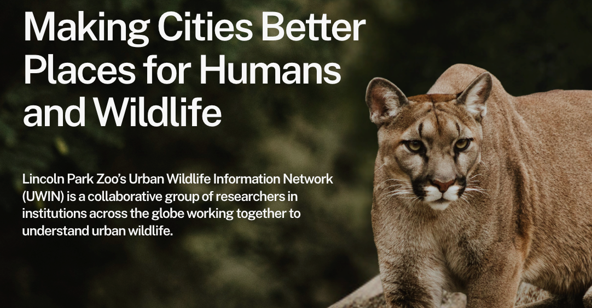
UWIN‘s mission is to collaborate with partners across diverse cities to replicate research methods and collect data which can support people and wildlife to coexist on our urbanizing planet.
Our project is part of the Accessing Urban Nature Initiative (AUNI). AUNI was established in 2025 as a partner site within the Urban Wildlife Information Network (UWIN), an international collaborative network founded in 2017. Initially developed to better understand urban wildlife in Chicago, UWIN has expanded to include more than 80 partner sites, creating opportunities to examine broader patterns of urban wildlife ecology across diverse cities.
One of the network’s major strengths is its use of shared research protocols, which support more standardized data collection and improve the comparability of findings across sites. At the same time, individual partner projects are able to investigate local urban wildlife patterns.
From the perspective of land-use change, urbanization is essentially a human-driven process of spatial restructuring. It involves transforming the natural environment to accommodate various socioeconomic activities, such as housing, production, and trade. Its core mechanism involves the conversion of vegetated surfaces into hardened, built-up surfaces, which in turn triggers a series of systemic changes in the physical environment. [1]
For wildlife, this process has multidimensional impacts: the urban heat island effect, noise disturbance, and nighttime light pollution significantly alter their living environment; additionally, land-use transitions lead to habitat loss and fragmentation [2]. Furthermore, human activities such as industrial emissions and global trade exacerbate ecosystem disturbances, bringing about issues such as invasive species, which further reshape the structure of urban ecosystems.

Environmental Changes: urban Heat, nighttime lighting, noise...
Habitat Loss and Fragmentation
Industrial Pollutants in Water and Soil Systems
A notable consequence of urbanization is the decline of biodiversity. [3] Due to changes in the physical environment, certain species unsuited to urban environments have declined as a result of natural selection. A global analysis covering 54 urban bird species and 110 urban plant species estimated that the “species density” of native birds and native plants in cities is only about 8% and 25% of the non-urban reference values; urbanization characteristics better explain this loss than climatic and geographic factors. [4]
Moreover, fragmented and discontinuous urban green spaces, along with extensive impervious surfaces, can restrict animal movement and reduce gene flow. Beyond genetic isolation, restricted movement can increase competition within remaining habitats, particularly where plant and resource diversity are already limited. This can lead to a reduction in genetic diversity within urban populations and greater genetic differentiation between populations, particularly for species with limited mobility. [5]
One study found that the average movement distance of mammals in areas with high human footprints is only about one-half to one-third of that in areas with low human footprints, implying a potential systemic decline in ecological functions such as foraging, dispersal, and seed dispersal. Although urbanization is not the sole explanatory variable, infrastructure and the intensity of human activity are key factors. [6]


Photos sourced from Unsplash under the Unsplash License.
The impact of urbanization on biodiversity is widespread and affects multiple species, but the manner and extent of this impact vary among different species. [7]
For example, birds face habitat loss, collisions with glass surfaces, and the combined effects of nighttime lighting and noise; [8,9] However, some urban-tolerant birds, especially generalists such as crows and pigeons, can benefit from urban environments by exploiting human-derived food, artificial nesting sites, and other built resources. [10]
For mammals, roads and buildings create physical barriers that reduce their range of movement, decrease connectivity, and restrict gene flow. [11] Yet some generalist mammals such as raccoons can persist and even thrive in cities because of their broad diet, behavioral flexibility, and ability to use anthropogenic subsidies such as trash and pet food. [12]
Amphibians are highly sensitive to humidity, breeding water bodies, and connectivity; [13] urban pollution of rivers and drainage modifications may lead to decreased breeding success and an increased risk of local extinction. [14]
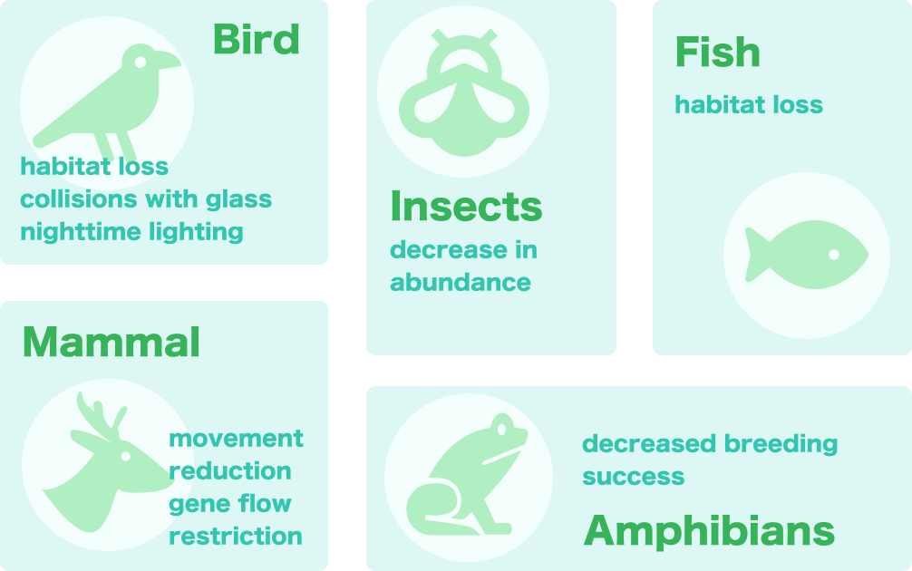
Nearly all animals living in cities are affected by urban heat. The urban heat island effect causes air temperatures in cities to be approximately 1–3°C higher than in surrounding suburban areas, with this warming effect extending an average of 4–12 km. [15,16] This can alter organisms’ heat tolerance, daily rhythms, and reproductive success.
Urban populations may develop evolutionary responses that enhance heat tolerance, but these are often accompanied by a loss of cold tolerance or a narrowing of their temperature tolerance range. [17]
Urban lizard populations can withstand higher ambient temperatures and exhibit a higher upper heat tolerance limit than forest populations; however, their tolerance to low temperatures is reduced, and their optimal temperature range tends to narrow. [18]

Urban heat may also alter animal behavior and activity patterns. [19] Increased heat exposure causes animals to adapt by changing their foraging times, becoming more nocturnal, and spending more time in the shade, near water, or underground. [20] This alters the encounter rates between animals and resources, as well as between animals and their conspecifics or predators, thereby triggering changes in the structure of food webs.
Extreme heat spikes affect the survival rates of animals during reproduction. During the embryonic and larval stages, brief heat spikes can exceed physiological thresholds, leading to reduced survival rates. In reptiles, relatively warm incubation temperatures can accelerate development, but extremely high temperatures can cause mortality. [21] Urban heat islands may create abnormally warm nesting conditions that differ from adjacent natural areas in terms of both average and extreme temperatures, thereby affecting animal growth.

Sourced from Unsplash under the Unsplash License.
According to the United Nations Department of Economic and Social Affairs, the share of the world’s population living in urban areas is projected to rise from 56% in 2021 to 68% by 2050. [22] Urbanization will affect an increasing number of wildlife species worldwide. Research on urban wildlife not only helps us understand how species survive and adapt in environments with high levels of human disturbance, but also provides a scientific basis for the conservation of urban biodiversity. Because urban environments are highly complex, their ecological processes often differ from observations made in laboratories or natural settings; therefore, conducting research in real-world urban contexts is particularly critical. [5]
Urban planning can serve as a key intervention to mitigate habitat fragmentation through the development of green space systems and ecological corridors. By establishing a continuous network of green corridors and improving connectivity between green patches, we can provide migration routes and habitat for animals, thereby enhancing gene flow and population stability. Furthermore, maintaining biodiversity helps regulate pest populations and reduces reliance on chemical control methods. This supports more stable and resilient ecosystems, creating a positive feedback loop that further sustains biodiversity over time. [5]
Philadelphia Water Department
Drexel University & 6+ partners
Penn’s School of Veterinary Medicine
To understand how urbanization gradients influence wildlife activity


Motion-triggered cameras automatically capture images with time stamp, temperature, and barometric pressure when movement is detected, allowing us to monitor wildlife presence, frequency, and behavior over time.
The cameras use SD cards for local data storage. Data are collected four times per year to capture seasonal variation: January, April, July, and October. Each deployment runs for approximately 4-6 weeks.
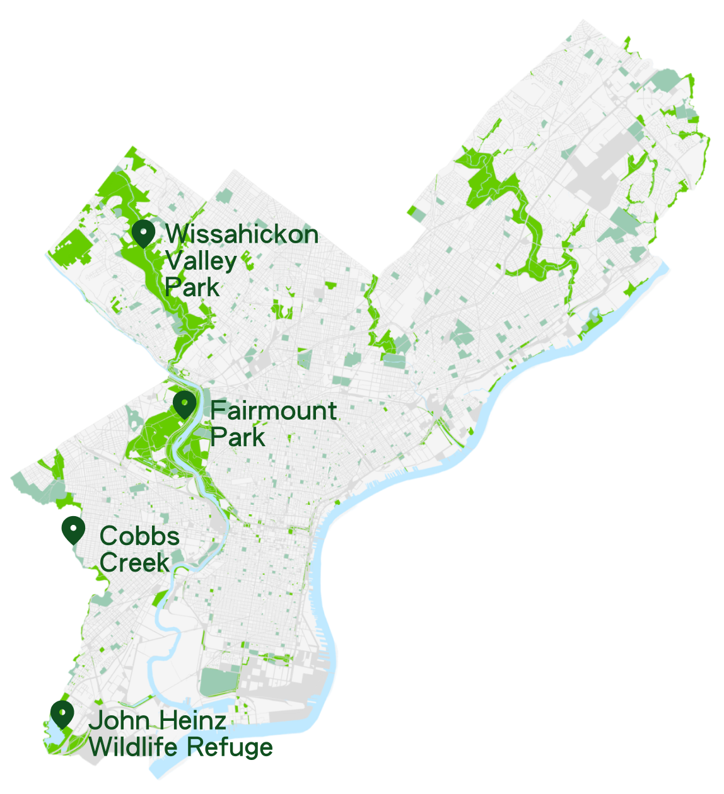
Data sources:
OpenStreetMap: https://www.openstreetmap.org/
OpenDataPhilly: https://opendataphilly.org
Our cameras are strategically deployed across Philadelphia’s major green corridors, including Fairmount Park, Wissahickon Valley Park, Cobbs Creek, and John Heinz Wildlife Refuge.
The project is being deployed in phases with a total target of 35 locations, of which 16 have already been installed. Camera locations are spaced at least 900–1000 meters apart to ensure that cameras are independent replicates.
The locations prioritize transects along the Schuylkill River and are in the process of expanding coverage toward the East and North areas of Philadelphia, to build a representative sample of observations across the city (e.g. Tacony Creek, etc.).
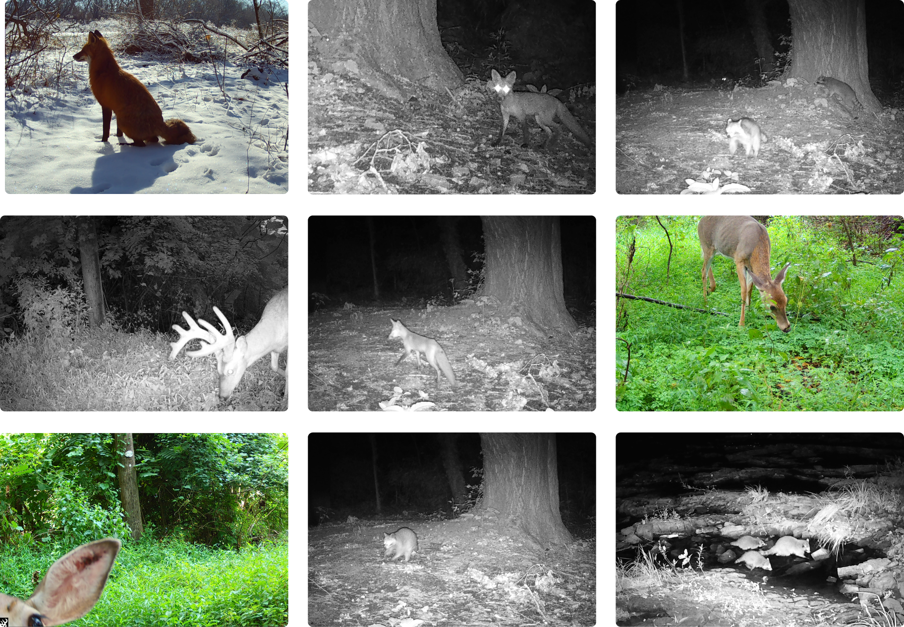
Our team uploads all images to WildTrax, an online database for UWIN partners to use to share data. The platform uses AI integrated tools to classify images as animals, humans, and vehicles. Yet its ability to identify specific animal species remains limited.
To ensure data quality, all AI-generated labels are manually reviewed and validated. The verified dataset is then exported as structured tables for further analysis and modeling.
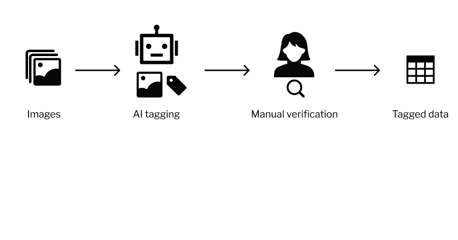
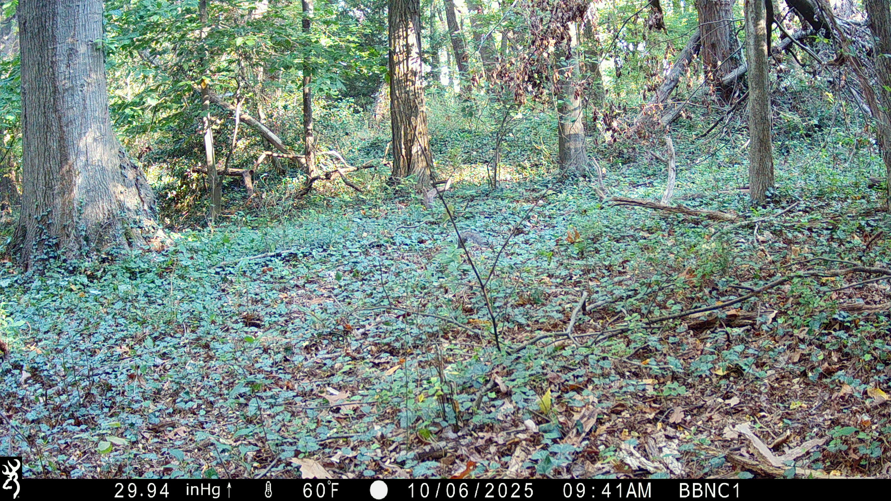
Challenge: can you find the squirrel in the photo?
WildTrax identifies animals and places a frame around the area where the animal appears. However, when animals are small in size, partially hidden such as under leaves, or blurred in nighttime black-white images, AI recognition accuracy decreases. In addition, non-target motion like wind-blown vegetation introduces noisy data.
Therefore, each image must be carefully reviewed by humans to confirm the presence of animals and to annotate their species and counts.
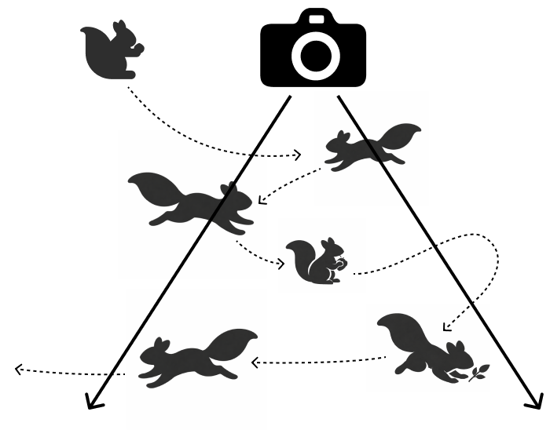
A single animal can trigger multiple captures during a short period
When an animal remains near a camera for an extended period, it may trigger multiple captures within a short timeframe. However, for analysis purposes, we aim to treat these as a single presence. We therefore apply a duplicated occurrence rule: photos capturing the same species and same counts within a 15-minute window will be considered as one presence of the same animal.
This helps reduce duplicate records and ensures more accurate records of wildlife activity.
Loading sample data...

300m buffer average
calculated from urban heat data
300m buffer average
calculated from impervious surface data
300m buffer area percentage
calculated from land use data

nearest distance
calculated from land use data

nearest distance
calculated from land use data

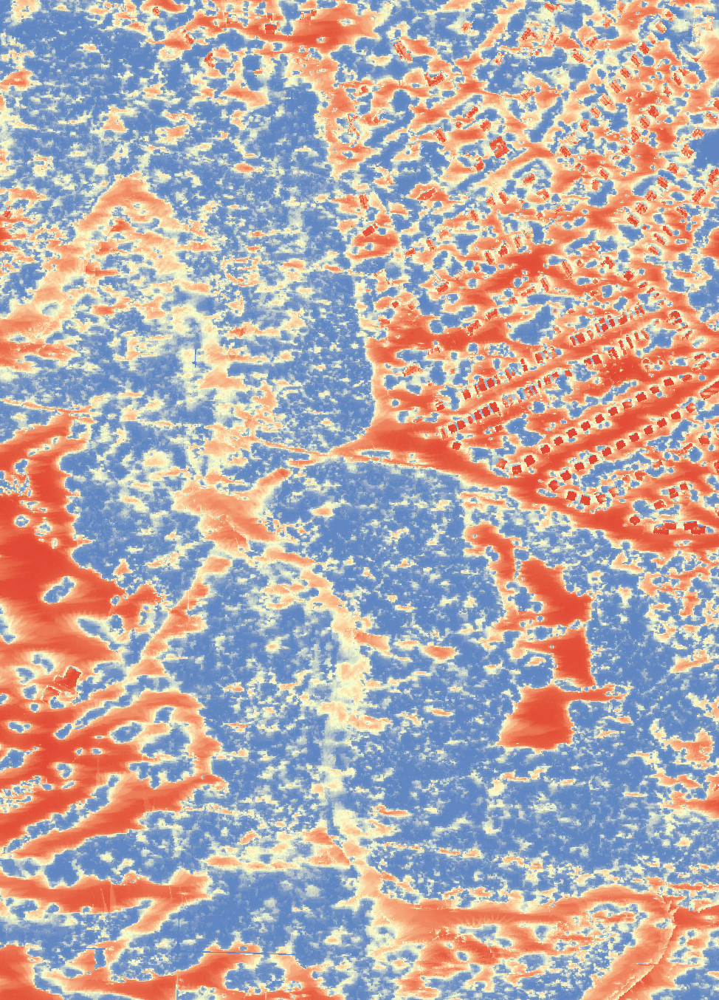


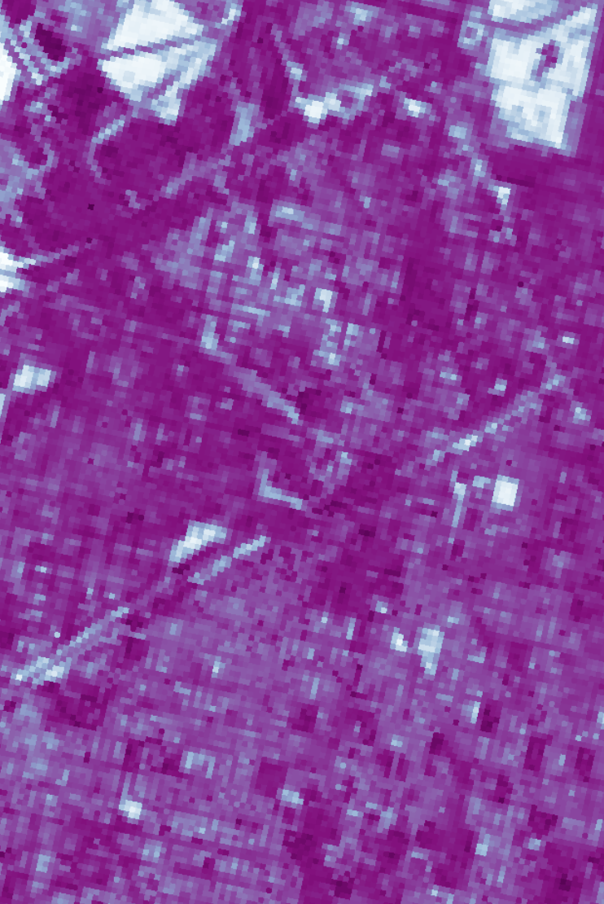
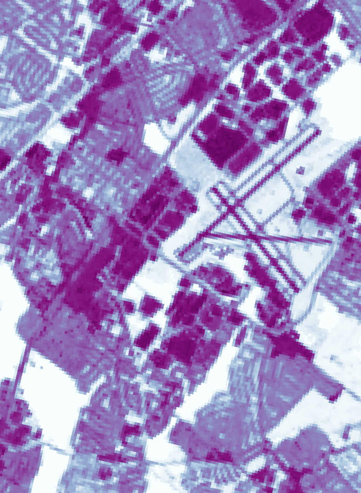

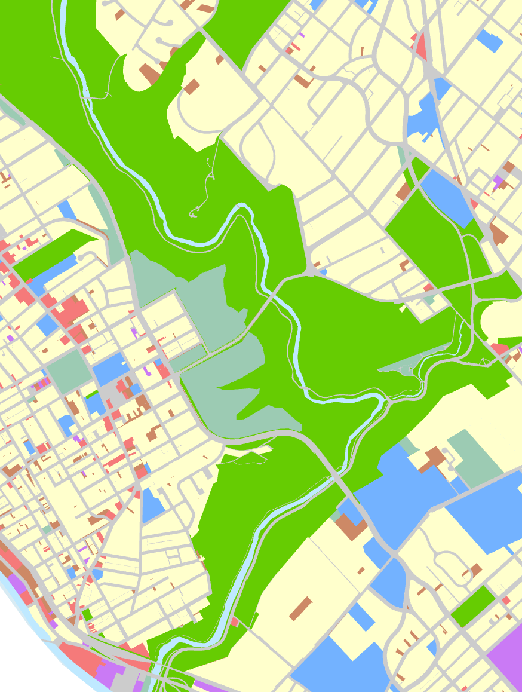
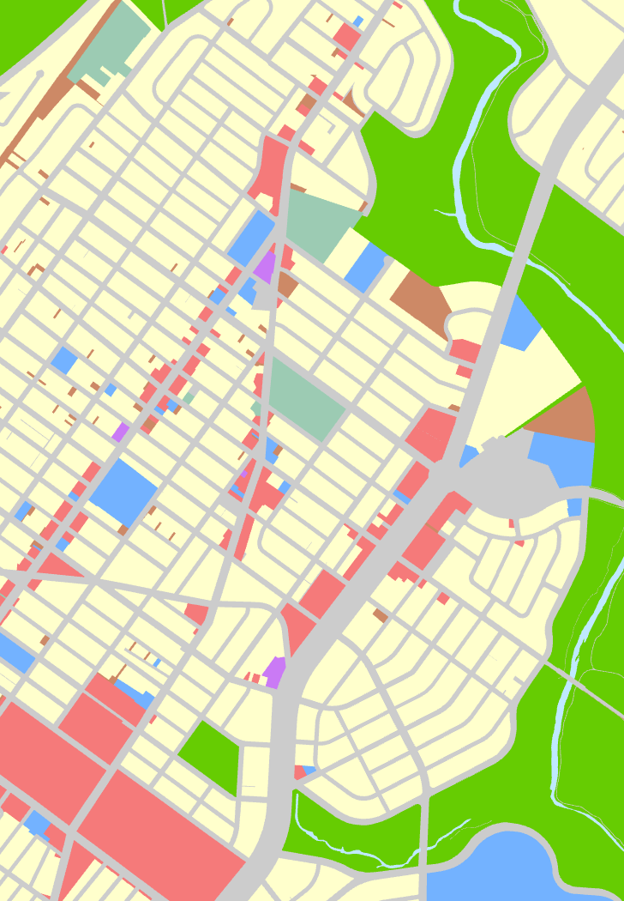
Data sources: Urban heat: https://xiaojianggis.github.io/pedheat/
Impervious surface:
https://www.mrlc.gov/downloads/sciweb1/shared/mrlc/data-bundles/Annual_NLCD_FctImp_2024_CU_C1V1.zip
Land use: https://catalog.dvrpc.org/dataset/land-use-2023
Our team spatially joins wildlife activity with built environment dataset to enable joint analysis. Each camera location is geo-referenced, and we create buffer zones around it to capture the surrounding environmental context. Within these buffers, we extract specific built environment variables and aggregate them into quantitative indicators. After testing various distances, we settled on a 300-meter buffer zone as the data collection area.

Loading chart...
The species frequency across all presences reveals a highly uneven composition. Eastern Gray Squirrels dominate the dataset, representing 50% of all wildlife presences, followed by Common Raccoons and Red Foxes (~14%), and White-tailed Deer (~9%). The dominance of Eastern Gray Squirrels is consistent with Philadelphia’s urban ecological structure.
The fragmented green spaces and human-adjacent habitats create favorable conditions for squirrels, which are highly adaptable and maintain high population densities in urban environments. Common Raccoons and Red Foxes are both opportunistic and capable of exploiting edge habitats and human-modified landscapes. Their relatively high proportions suggest a well-established presence in peri-urban ecological niches.
White-tailed Deer are typically associated with larger suburban conservation areas or less disturbed green corridors. From a broader perspective, the dataset is mammal-dominated, accounting for 95% of all presences. This reflects that motion-triggered cameras are inherently more effective at detecting ground-dwelling mammals, whereas birds are less likely to trigger sensors or remain within the camera frame long enough to be recorded.
Loading chart...
Wildlife presences follow a clear bimodal pattern, with two distinct peaks occurring at 8AM and 5PM. When aligned with the average sunrise (~7AM) and sunset (~6PM) times in Philadelphia during October, these peaks fall within a one-hour window of crepuscular periods. This suggests that wildlife activity is strongly concentrated during dawn and dusk transition periods, when species with different activity rhythms overlap.
Loading chart...
The reduced daytime activity among raccoons, foxes, and deer can be interpreted as a form of behavioral adaptation to human disturbance in urban and peri-urban environments. [23] This temporal partitioning of wildlife also reduces interspecies competition while enabling coexistence within shared urban green spaces. [24]
To avoid unintended disturbance to wildlife, the precise locations of the camera sites are not publicly disclosed. The 13 camera sites are instead presented in order from north to south based on latitude.
Loading chart...
Wildlife presence varies substantially across locations. Most cameras record over 60% of total presence during daytime, with several locations reaching as high as 95% daytime presence. These sites are typically dominated by Eastern Gray Squirrels. In contrast, locations 2 and 13 show over 60% of presence occurring during nighttime.
These sites are dominated by nocturnal mammals such as raccoons and deer. Notably, these locations correspond to larger, less disturbed natural or conservation areas. Overall, this contrast indicates that urban or human-adjacent sites are diurnal-dominant, while less disturbed larger green spaces are more diverse.
Loading chart...
The photo frequency metric captures the average daily presence recorded per camera, providing a proxy for overall wildlife activity intensity. The highest activity level reaches 12 presences per day, observed at a site located within a large conservation area. At the lower end, some cameras record as few as ~1 presence per day, typically found in human-disturbed locations.
This pattern highlights a strong negative relationship between human disturbance and wildlife activity intensity, consistent with established urban ecology theory. [23]
Loading chart...
Wildlife richness varies substantially across locations. The most species-rich site records up to 21 species, located within a large, continuous natural area, likely benefiting from higher habitat diversity. In contrast, the lowest site records only 3 species in high human-activity areas and is mostly mammal-dominated, suggesting that only the most adaptable species persist under these conditions.
Presence number
0
Frequency
0
Recording Day
0
Richness (species count)
0
Loading dashboard data...
We further examine five built environment variables at each camera location. While no clear overall relationships are observed, partly due to the limited number of sites and sampling points, one illustrative case emerges from Location 7, which exhibits the lowest photo frequencies (~1 presence/day). Based on its environmental characteristics, we can form a hypothesis consistent with ecological expectations that wildlife activity may decrease in areas with closer proximity to transportation infrastructure, greater distance from water sources, lower availability of green space, higher radiant temperature, and higher levels of impervious surface.
We tested linear, GLMM, and GAMM models. Since MEAN_IMP (impervious surface) was the only consistently significant predictor and showed signs of non-linearity, we adopted a GAMM framework to capture its smooth effect.


(1) Nonlinear effect of urbanization (MEAN_IMP)
Both models show a highly significant nonlinear relationship (p < 0.001) between impervious surface and wildlife. Wildlife activity (presence) and species richness both follow a hump-shaped curve.
Peak occurs at moderate levels of impervious surface (~25–30%).
Both low and high impervious levels have lower values.
(2) Consistent direction across two models
Presence model (Negative Bin): Deviance explained = 32.3%
Richness model (Poisson): Deviance explained = 24.4%
(3) Effects of other variables
Across both models, all of the following variables are significant: Distance to transportation (+), Distance to hydrology (+), Radiant temperature (–), Green space area percentage (–).
Overall, the results suggest that urbanization is not linearly detrimental to wildlife. Wildlife presence and diversity peak at intermediate urban intensity, while extremely urban or extremely natural areas both show lower observed activity.
The hump-shaped pattern between impervious surface and wildlife presence/richness is partly influenced by Eastern Gray Squirrels (~47–50% of observations), but the consistency across both presence and richness models suggests a broader urban–suburban ecological gradient, consistent with the Intermediate Disturbance Hypothesis (IDH). [25]
This study provides preliminary evidence that urban wildlife patterns in Philadelphia are shaped by a combination of species composition, temporal behavior, and the urbanization gradient. Wildlife presence is highly uneven and strongly dominated by mammals, particularly Eastern Gray Squirrels. Temporal patterns show a clear partitioning between diurnal and nocturnal species, with activity peaks during crepuscular periods.
Strong spatial heterogeneity is observed across sites. Human-adjacent locations are dominated by daytime, squirrel-driven activity, while less disturbed conservation areas support higher nocturnal activity and greater species diversity. Modeling results suggest a nonlinear relationship between urbanization (impervious surface) and wildlife activity.
Both wildlife presence and species richness follow a hump-shaped pattern, peaking at moderate levels of urbanization (~25–30% impervious surface). Given the limited sample size (13 camera locations), these findings are exploratory and hypothesis-generating.
These findings suggest that urban wildlife may benefit through strategic design of intermediate urban landscapes.
Overall, while preliminary, these findings highlight that biodiversity in cities depends on the right balance between natural and built environments.
Three images in the Introduction section are sourced from Unsplash and are used under the Unsplash License.
Images of motion-triggered cameras are from a collaborative project between the Accessing Urban Nature Initiative (AUNI) and the Urban Wildlife Information Network (UWIN).
Some icons are adapted from Alibaba Iconfont and are used in accordance with the platform's licensing terms.
Data sources:
OpenStreetMap: https://www.openstreetmap.org/
OpenDataPhilly: https://opendataphilly.org
Urban heat data: https://xiaojianggis.github.io/pedheat/
Impervious surface data: https://www.mrlc.gov/downloads/sciweb1/shared/mrlc/data-bundles/Annual_NLCD_FctImp_2024_CU_C1V1.zip
Land use data: https://catalog.dvrpc.org/dataset/land-use-2023